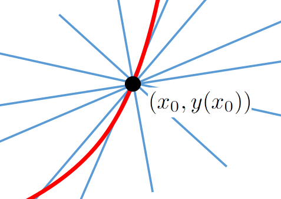
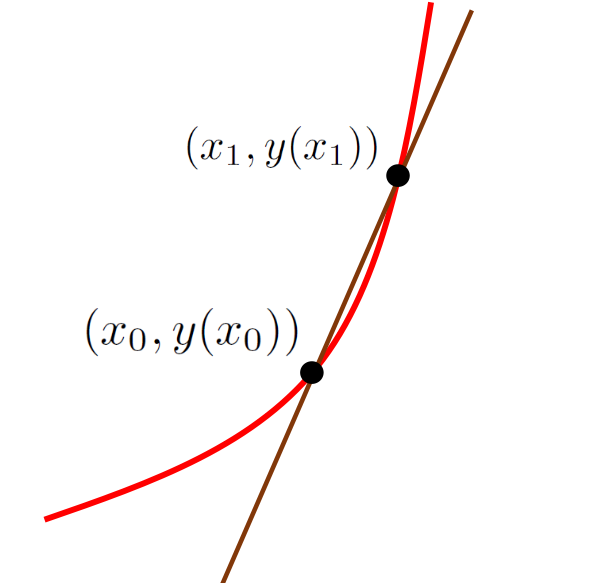
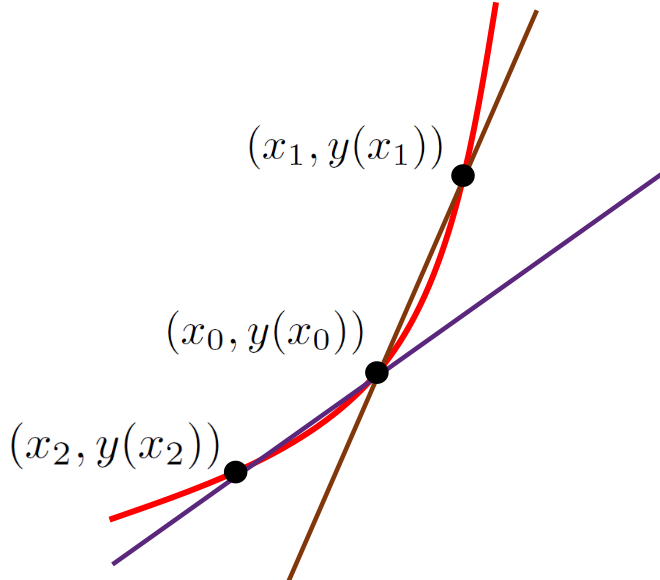
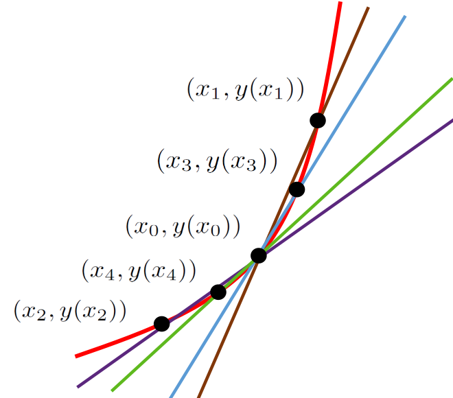
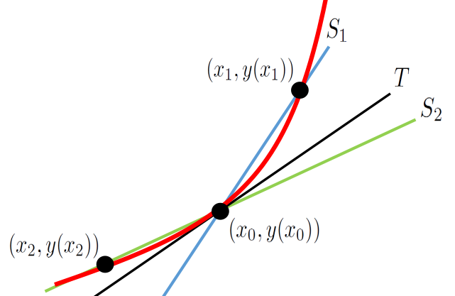
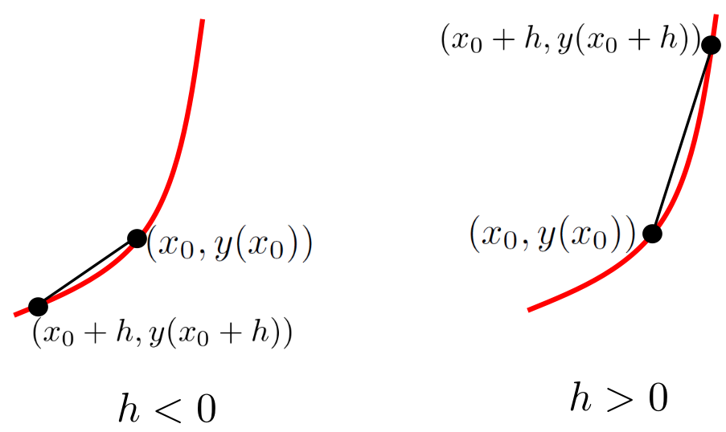
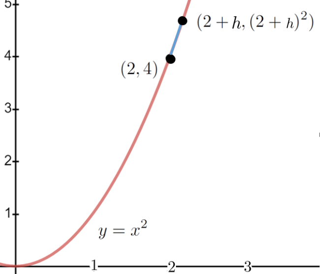

Calculus required continuity, and continuity was supposed to require the infinitely little; but nobody could discover what the infinitely little might be.
In Part I we defined the derivative of \(y=y(x)\) to be the differential ratio \(\dfdx{y}{x}\text{,}\) but Berkeley shows in The Analyst that there are considerable difficulties with this approach. How else might we define the derivative? This is our next puzzle.
If we want to construct the line tangent at a particular point, \((x_0, y(x_0))\) on a given curve we immediately have this problem: We only have one point, but there are (infinitely) many lines through that point. A few of them are shown below.

How could we possibly pick the tangent line out of this mess?
The only distinguishing feature that the tangent line has is that it is in fact tangent to our curve. That is not much to go on. But it is not nothing either.
To form a line we desperately need another point. But where to find one? The only other points we have to work with are points on the curve itself.
Choose a new point, say \((x_1, y(x_1)),\) on our curve but a little to the right of \((x_0,y(x_0))\) and draw the line between \((x_0,y(x_0))\) and \((x_1,y(x_1))\) as shown in the sketch below.

Recall from Chapter 6 that the trigonometric secant function is so called because it is the length of a line segment which cuts the circle. The brown line in this sketch cuts the curve so it is called a secant line.
Similarly, if we choose a point a little to the left of \((x_0,y(x_0))\) and draw another secant line (shown in purple) it should be clear that the tangent line will be between the two secant lines in the sketch below.

We have eliminated a lot of potential tangent lines, but we haven’t eliminated all of them. Is there a way we could refine our search to reduce the set of possible tangent lines even further?
Sure. Choose \(x_3\) between \(x_0\) and \(x_1\) and draw the (blue) secant line from \(x_0\) to \(x_3,\) and then choose \(x_4\) between \(x_0\) and \(x_2\) and draw the (green) secant line through them to get the sketch below.

It is clear that we have eliminated more potential tangent lines, and that by continuing to choose points even closer to \(x_0\) we can eliminate even more of them.
This approach seems to have some potential but there are at least two difficulties:
So far we’ve relied heavily on diagrams to motivate our approach, and we know that diagrams can be misleading. However this is not as serious as it seems to be because we are only using the diagrams to motivate a new definition for the derivative. Once that definition is in place we can disregard the diagrams and work directly with the definition regardless of the shape of the graph.
You should generate a few graphs of your own, different from ours and from each other, to confirm that our arguments work for them as well.
We’ve been drawing the tangent lines but we need to keep in mind that the line tangent to the graph of our function at a point is not the derivative of the function. The derivative is the slope of the tangent line. And slope is a number. The pictures we’ve drawn so far are very suggestive but they don’t give us numbers.
For the time being, we will handle the first difficulty by ignoring it. That is, we will continue to use diagrams to motivate our ideas, but when we are done we will have to circle back and ask ourselves if our reliance on those diagrams has caused us to miss any special cases which need to be addressed.
To handle the second difficulty consider the sketch below.

It is clear that if the tangent line, \(T\text{,}\) is caught between lines secant lines \(S_1\) and \(S_2\text{,}\) then the slope of \(T\) is necessarily caught between the slope of \(S_1\) and the slope of \(S_2.\) Thus we have
\begin{equation*}
\text{slope of } S_1=\frac{y(x_1)-y(x_0)}{x_1-x_0}\gt \text{slope of }T\gt
\frac{y(x_2)-y(x_0)}{x_2-x_0}=\text{slope of } S_2.
\end{equation*}
A specific example will be helpful.
Example13.2.1.
Suppose \(y=x^2\text{.}\) We would like to compute the derivative (slope of the line tangent to the graph) of \(y\) at the point \(x=2\) by the the procedure indicated above.
Before we start, observe that from our work with differentials we know what we are expecting to get. It is
We say that \(y^\prime(2)\) is bounded, and that the numbers \(4.01\) and \(3.99\) are the bounds.
Problem13.2.2.
Compute bounds on the derivatives of each function given at \(x=2\) by using the values of \(x_1\) and \(x_2\) given below.
\(x_1=2.001,\)\(x_2=1.999\)
\(x_1=2.0001,\)\(x_2=1.9999\)
\(x_1=2.00001,\)\(x_2=1.99999\)
\(x_{1}=2.000001,\)\(x_{2}=1.999999\)
(a)
\(y=x^2\text{,}\)
(b)
\(y=x^3\text{,}\)
(c)
\(y=-\frac{1}{x}\text{,}\) and
(d)
\(y=x^{1/2}\)
The results in Problem 13.2.2 are looking very promising indeed. Since they are looking so promising we’ll take a few minutes to simplify our notation a bit.
It is tedious to have all of these subscripted \(x\) variables (\(x_0, x_1, x_2, \cdots\)) so we will define an equivalent, but more useful, notation. The basic idea here is that we move to a new point a little bit away from \(x_0\) and form the quotient that gives the slope of the secant line at that point. To construct the first secant line we took \(x_1\) to be a number a little to the right of \(x_0\text{.}\) However, if we take \(h\) to be a positive number near zero then \(x_0+h\) expresses the same idea. Similarly, to construct a secant line a little to the left of \(x_0\) we take \(h\) to be a negative number near zero so that \(x_0+h\) expresses the same idea.

We can capture both situations notationally by agreeing that \(h\) is a number (either positive or negative) which is close to zero. Thus when \(h\) is positive the point \(x_0+h\) is to the right, and when \(h\) is negative the point \(x_0+h\) is to the left of \(x_0\) as shown in the diagram at the right.
When we express the idea this way we no longer need to generate all of the independent variables, \(x_1, x_2, x_3, \ldots\text{.}\) We can accomplish the same thing by taking \(x_h=x_0+h,\) where \(h\) is some arbitrary real number, which is close to zero. Each value of \(h\) gives us a different secant line through the point \((x_0,y(x_0)),\) and its slope will be
By the Principle of Local Linearity we see that when \(h\) is very small the quotient \(\frac{y(x_0+h)-y(x_0)}{h}\) will be very close to the the slope of the tangent line.
There is also a small technical matter we need to think about: Do we really need to consider secant lines on either side of \(x_0\) (for both positive and negative values of \(h\))? Would it not be sufficient to consider just the secant lines on the right formed from the sequence \(x_1=2.1, x_1=2.01, x_1=2.001,\ \ldots?\) It seems pretty clear that the slopes we get, \(4.1, 4.01, 4.001, \ldots\) are getting closer to \(4\text{.}\) Isn’t that enough?
No, it is not. But not because there is any inherent logical flaw in doing so. This has more to do with the properties we want the derivative to have than any purely logical consideration, so we’ll hold off further discussion until Section 15.3.

Returning to the example \(y=x^2\) at \(x=2\text{,}\) we let \(h\) be any number except zero and find of the secant line through \((2,4)\) and \((2+h,(2+h)^2)\text{.}\) We can’t let \(h\) be zero because if it is zero then \((2,4)\) and \((2+h,(2+h)^2)\) are the same point and we can’t construct the secant line. We must have \(h\neq0\) just to get started. In that case we have
This is interesting. Do you recognize this computation? It should be familiar to you. This is precisely the same computation you did when you used Fermat’s adaptation of the Method of Adequality to find tangent lines in Problem 3.4.10. The only difference, really, is that at this point Fermat would simply set \(h=0\) and move on. We can’t do that because we need two distinct points to specify a (secant) line. If \(h=0\) we only have one. This is frustrating because we can see that setting \(h=0\) will give us \(y^\prime(2)=4\) which we know to be the correct value.
Berkeley pointed out the problem of setting \(h=0\) in The Analyst (his Increments are what we’ve called \(h\)):
. . . this reasoning is not fair or conclusive. For when it is said, let the Increments vanish, i.e. let the Increments be nothing, or let there be no Increments, the former Supposition that the Increments were something, or that there were Increments is destroyed, and yet as a Consequence of that Supposition, i.e. an Expression got by virtue thereof, is retained. Which . . . is a false way of reasoning. Certainly when we suppose the Increments to vanish, we must suppose their Proportions, their Expressions, and every thing else derived from the Supposition of their Existence to vanish with them.
Requiring \(h\) to be non-zero at the beginning of our argument, and zero at the end is tantamount to requiring \(h\) to be zero and not zero simultaneously which is not possible. So \(h\) can’t be zero. But it can be very close to zero. Moreover as it gets closer to zero (\(h\rightarrow0\)) it is clear that \(4+h\rightarrow4\text{.}\) This should also feel very familiar to you. Do you see that we’re talking about a limit? From equation (13.2) we see that as \(h\rightarrow0\text{,}\)
Moreover, by the Principle of Local Linearity 5.2.5 as \(h\rightarrow0\) the secant and tangent lines become indistinguishable. Thus it appears that the limit
will be the value of the derivative at \(x=2\text{.}\)
Our discussion in Example 13.2.1 suggests that we can use the limit concept to finally resolve the logical difficulties inherent in a naive use of the differential as a foundation for Calculus, and that is exactly our present goal.
In this second part of this text we will finally build a viable theory to support Calculus which even Bishop Berkeley would have to accept. We begin with the following definition. This is the modern definition of the derivative.
Definition13.2.3.The Derivative.
Suppose \(f\) is a function, and that \(x\) is a real number. If \(\limit{h}{0}{\frac{f(x+h{})-f(x)}{h}}\) exists then we say that \(f\) is differentiable at \(x\) and that the derivative of \(f\) at \(x\) is given by:
if this limit exists. If the limit does not exist then the derivative also does not exist at \(x\text{.}\)
Definition 13.2.3 defines the derivative locally, “at \(x\text{.}\)” This may seem to be a mere formality but it is not. When we write \(f(x)\) it is easy to fall into the habit of thinking of \(x\) as representing all of the points in the domain of \(f\text{.}\) But that is fundamentally wrong. The variable \(x\) always represents a single point in the domain of \(f\text{.}\) Always. No exceptions. When its value is unknown we call it \(x\) (or \(y\text{,}\) or \(z\text{,}\) or Fred, Ethel, Ricky, or Lucy. These are all just names we give to a unknown specific quantity) because this is simpler than saying “whatever point we’re interested in.” This is why the symbol \(f(x)\) is pronounced “\(f\) of \(x\text{,}\)” or “\(f\) at \(x\text{.}\)”
In Example 13.2.1 we evaluated the derivative of \(f(x)=x^2\) at the single point \(x=2\text{.}\) It appears that if we want to evaluate the derivative of \(f(x)=x^2\) at \(x=3\) and \(x=4\) we need to compute \(\tlimit{h}{0}{\frac{f(3+h)-f(3)}{h}}\text{,}\) and \(\tlimit{h}{0}{\frac{f(4+h)-f(4)}{h}}\text{.}\)
But it is tedious to compute the derivative of a function one specific point at a time. If we leave \(x\) unspecified and compute \(f^\prime(x)=\limit{h}{0}{\frac{f(x+h)-f(x)}{h}} \) we obtain the value of the derivative of \(f\) at the single, but unspecified point \(x\text{.}\) We can then find the derivative of \(f\) at any point by replacing \(x\) with whatever point we are interested in.
Problem13.2.4.
Use the techniques we saw in Chapter 12 to compute \(f^\prime(x)\) by evaluating a limit. Check your work by differentiating using differentials.
Do not use L’Hôpital’s Rule. L’Hôpital’s Rule as that would be circular reasoning.
(a)
\(f(x)=x^2\)
(b)
\(f(x)=2x^2-x\)
(c)
\(f(x)=x^6-7x^4\)
(d)
\(f(x)=\pi\)
(e)
\(f(x)=\frac{1}{x^3}\)
(f)
\(f(x)=-\frac{1}{x}\)
(g)
\(f(x)=x^{1/2}\)
(h)
\(f(x)=x^{1/3}\)
When a function is differentiable at all of the points in its domain it is said to be differentiable on its domain or just differentiable.
Problem13.2.5.
Which of the functions in Problem 13.2.4 are differentiable and which are not? Identify all points of non-differentiability.
If you look closely at Definition 13.2.3 you can see Leibniz’ differentials lurking in the background. (Newton’s fluxions are nowhere to be seen, however.) If we let \(\Delta{}y=f(x+h{})-f(x)\) and \(\Delta x = h\) then for values of \(h\) very close to zero we have.
The approximation gets better as \(\Delta x\rightarrow0\) (equivalently, as \(h\rightarrow0\)) so you can see that Definition 13.2.3 avoids the infinitely small by replacing differentials with \(\Delta x\) (equivalently \(h\)) which is a small, but finite, number which is only considered in the limit as \(\Delta x\rightarrow0\text{.}\) In particular, \(\Delta x\) is not an infinitesimal. But it is allowed to become as close to zero as needed while remaining finite in size. Needless to say, limits are much harder to work with than differentials. Their saving grace is if they can be made logically unassailable with a proper definition. Bishop Berkeley would approve.
For the rest of this text we pursue two over–arching goals. The first is to rigorously recapture from Definition 13.2.3 all of the differentiation rules we are already familiar with. We will address that in the first section of the next chapter. Keep in mind that we are not developing the differentiation rules. We already know them, and by now you should be quite skillful at their use. Our goal now is to show rigorously that by using Definition 13.2.3 we can recapture all of the properties that we found so useful before.
To do this we will need several properties of limits which we will state — without proof — in the next section. Then we will prove that our differentiation rules and the First Derivative Test are valid using Definition 13.2.3. However all of this will be done under the assumption that the limit properties in the next section are actually true.
Our second goal is to prove, rigorously that the limit properties in the next section are actually true. We will do this in Section 17.4.